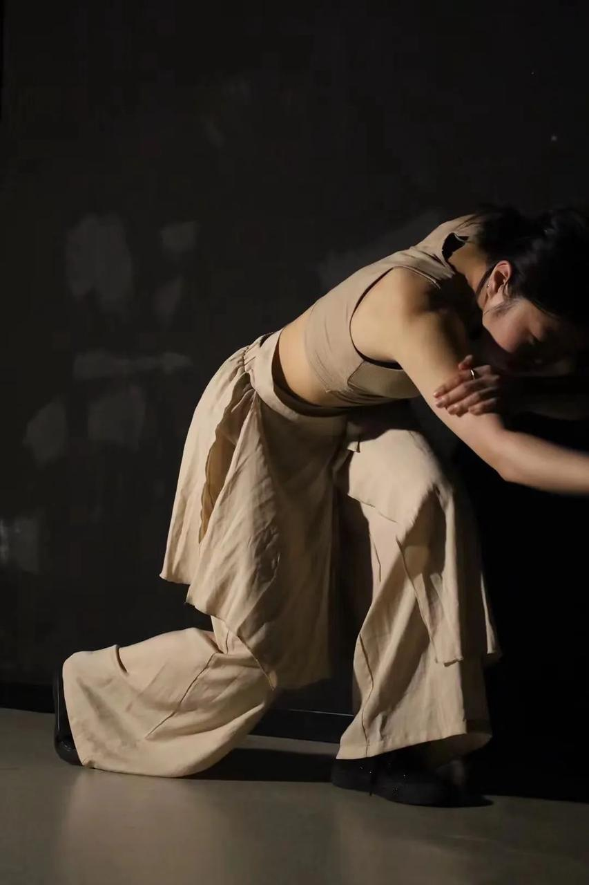
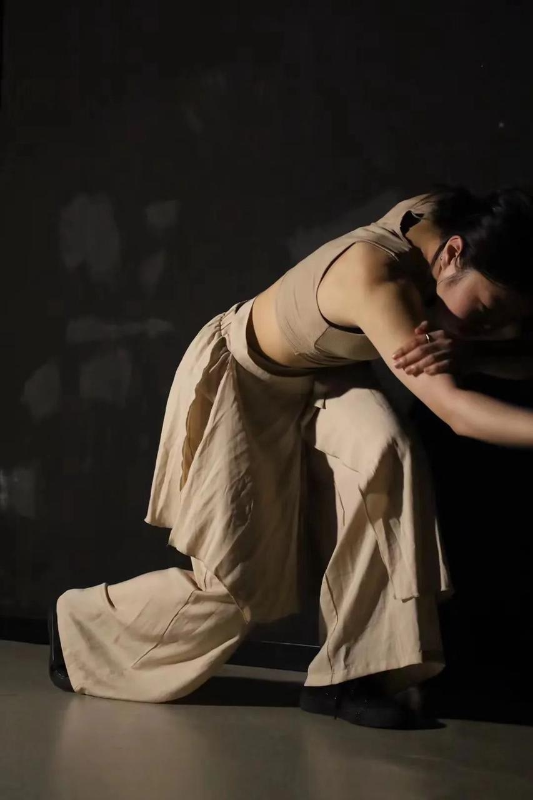
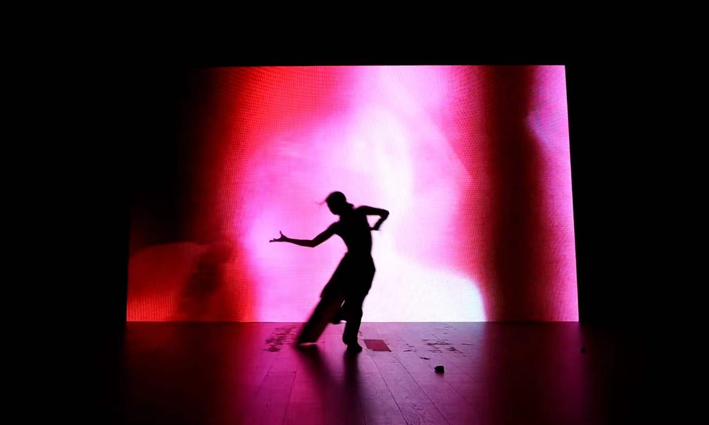
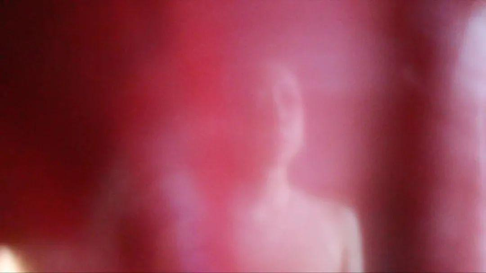
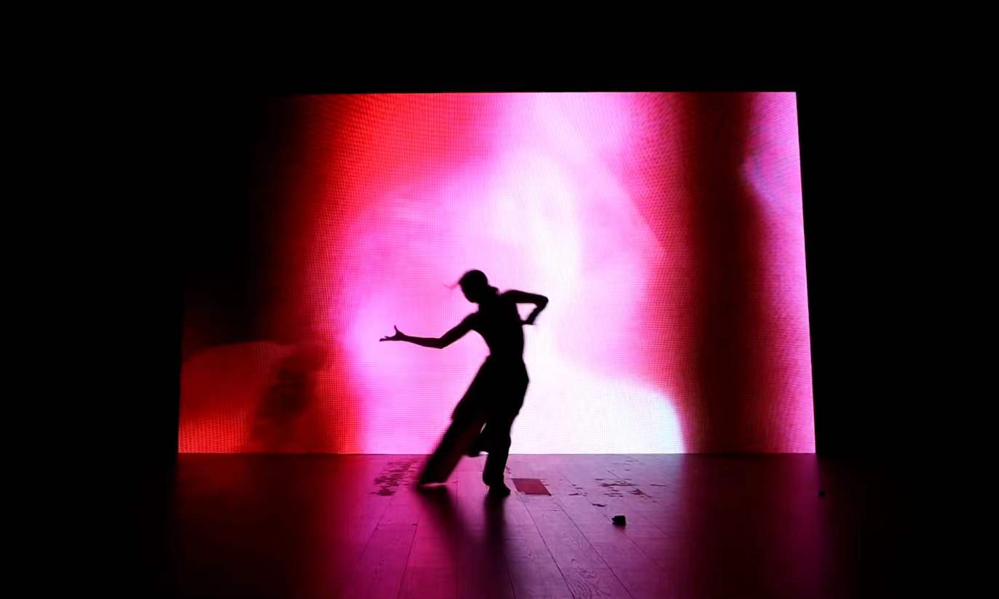
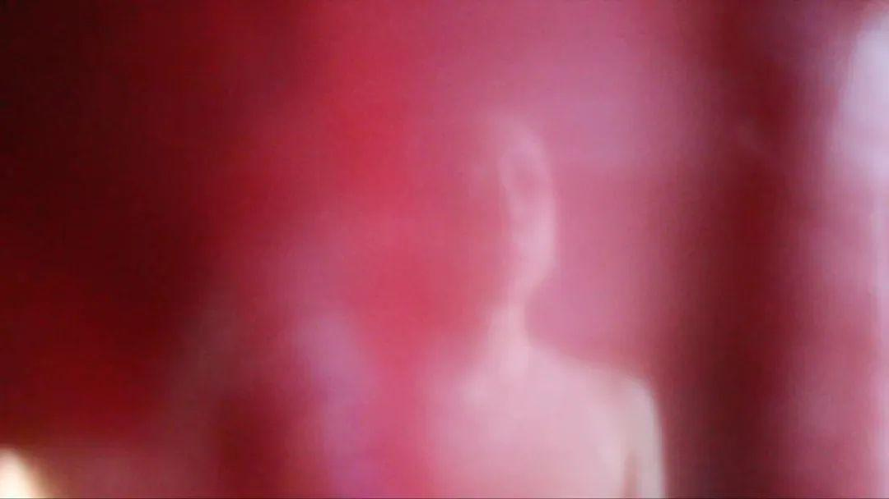

Chora: 1. Full Moon (2024)
Experimental music · Dance · Interactive visual · Video/Live Performance
(When you have a link, we can embed YouTube / Vimeo / Bilibili / a direct MP4 here.)
Chora是⼀种处于运状态的容器，⽆形⽆状，是沉默的在场者，它飘来飘去，可惑但⽆法界定，各种⽭盾可以在其中相互⽃争。
Chora is a container in a state of being in motion— invisible and formless. It is perceptible but indefinable, where various contradictions can struggle against each other.
传统⼆元对立的意识形态下，满⽉普遍地被赋予阴性能量的意象：柔美丰盈；30天左右的圆缺之变为⽉经，⽆不包含对孕育能⼒的象征。但⼏乎未曾有⼈真正地“触摸”过皎洁的满⽉，我们所看到的便是真实的吗？现实与想象中交杂的混沌感，这种不可⾔说的状态正是Chora所具有的。⼀切来源于探索好奇的未知，这种直觉下对现实的逃避进⼀步演化成对于⾃我的发现，从⽽获得了前所未有的能量场与崭新的治愈。
Under the traditional ideology of binary opposition, the full moon is generally endowed with the image of the traditional feminine energy: softness and fullness. The transition from defect to round in about 30 days is pointed to as menstruation, and it is a symbol of fertility. But almost no one has truly “touched” the bright full moon— is what we see real? The mixed sense of chaos in reality and imagination, this indescribable state, is precisely what Chora possesses. Everything comes from exploring the curious unknown; under this intuition, escape from reality further evolves into the discovery of oneself, thus obtaining an unprecedented energy field and a new cure.
能够超越时空尺度之限制即为知觉能力之扩张，直到一个不曾为语言所染指的原初“身体”出现。通过模糊⾳乐、舞蹈、视觉、装置之间的界限，我们邀请⼤家共同探讨性别、能量场、神化崇拜、秩序与破坏的平衡等观念。
To transcend the constraints of time and space is to expand the capacity of perception, until an original “body” emerges— one that has never been touched by language. By blurring the boundaries between music, dance, vision, and installation, we invite everyone to explore concepts such as gender, energy fields, deification worship, and the balance between order and destruction.
 

 


